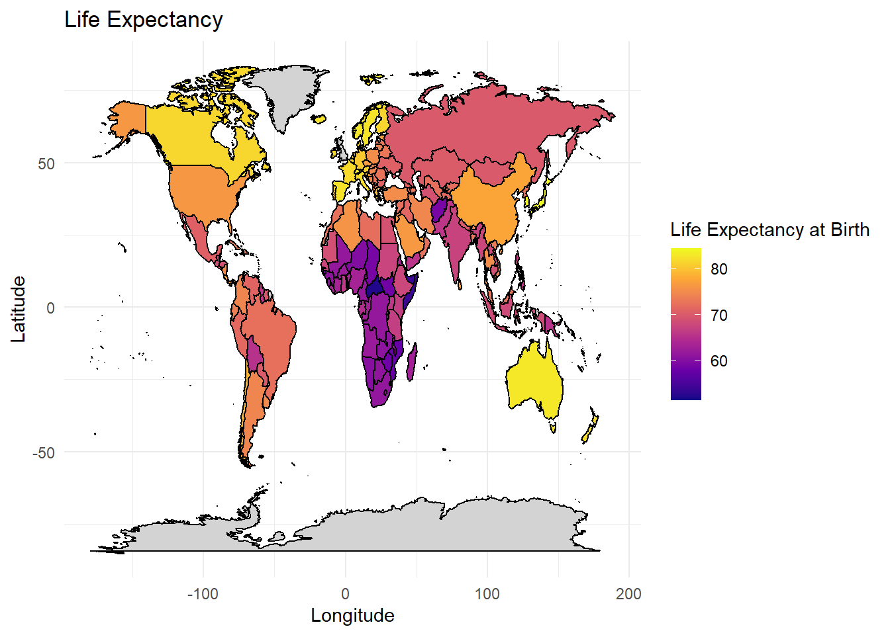
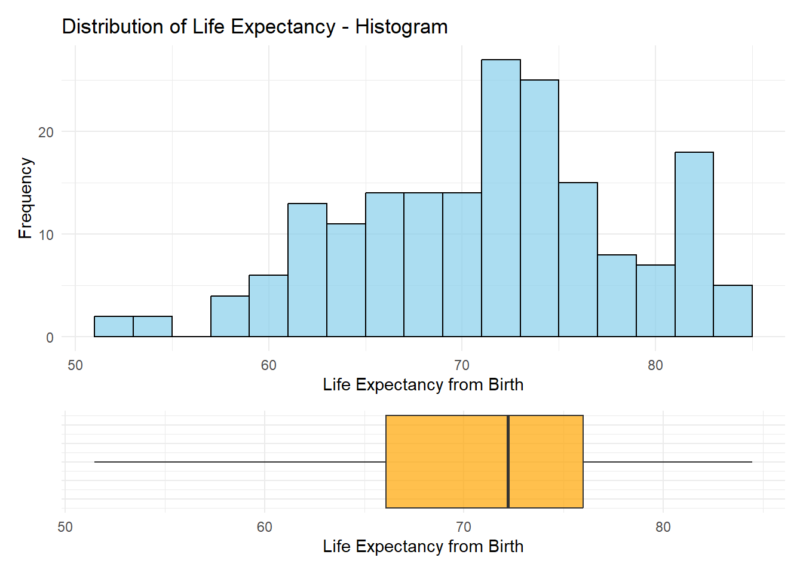
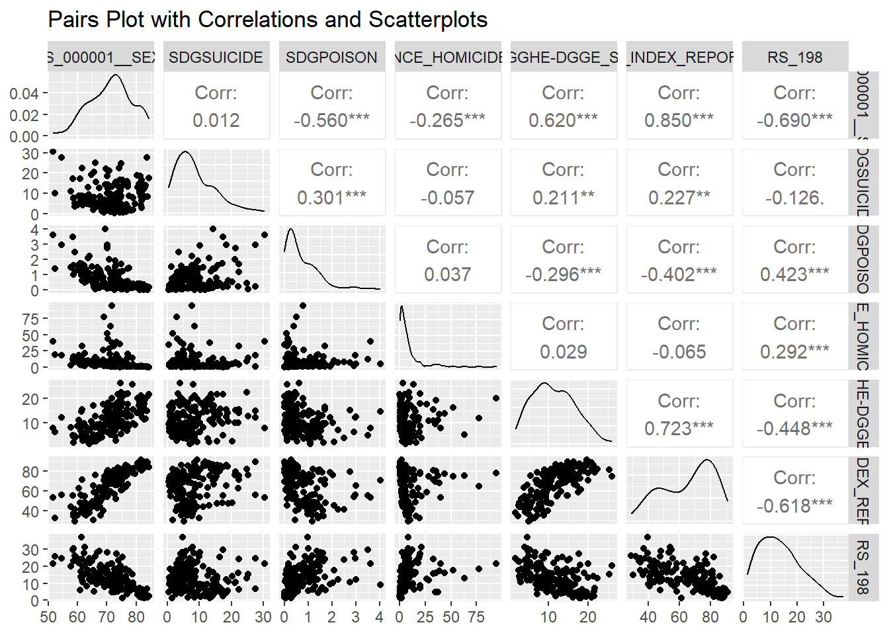
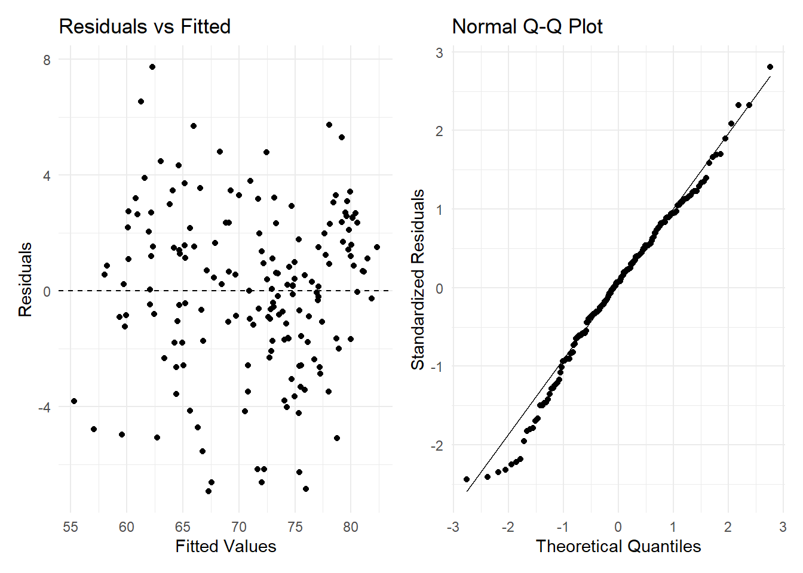
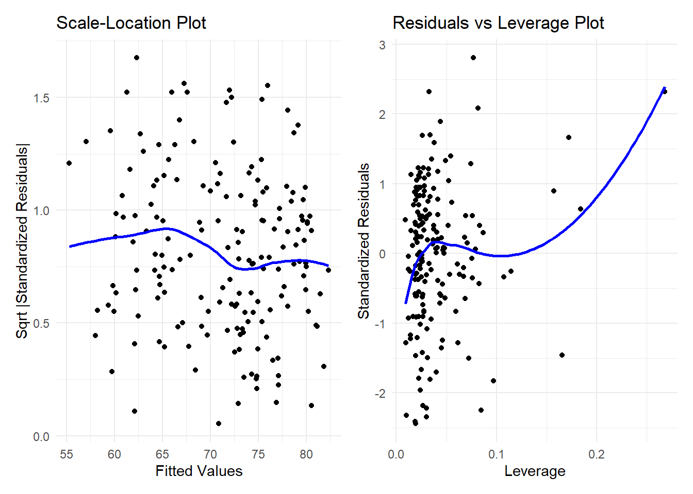
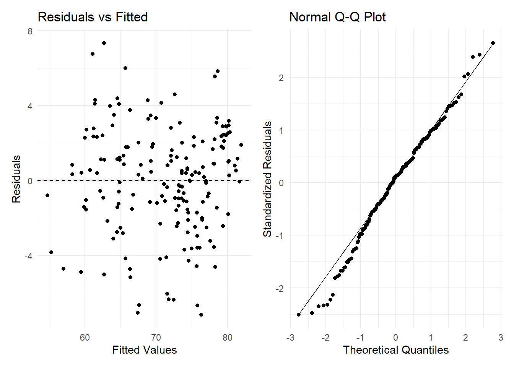
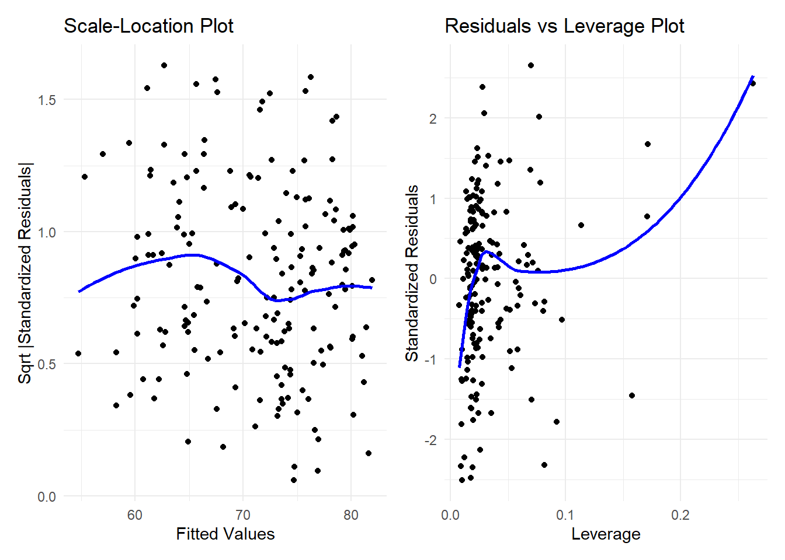
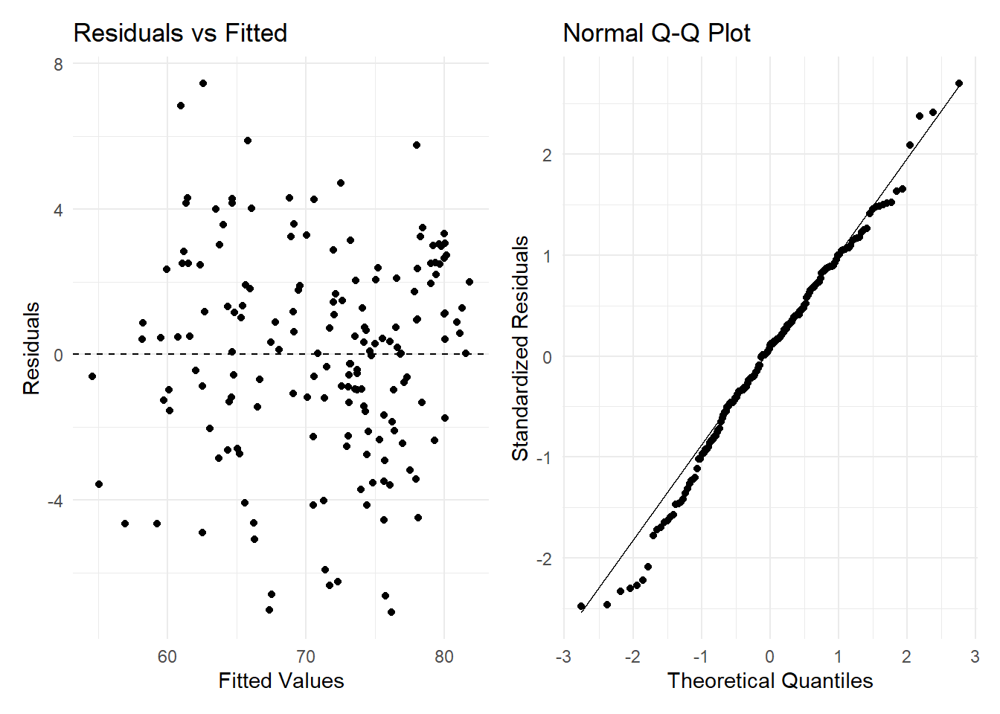
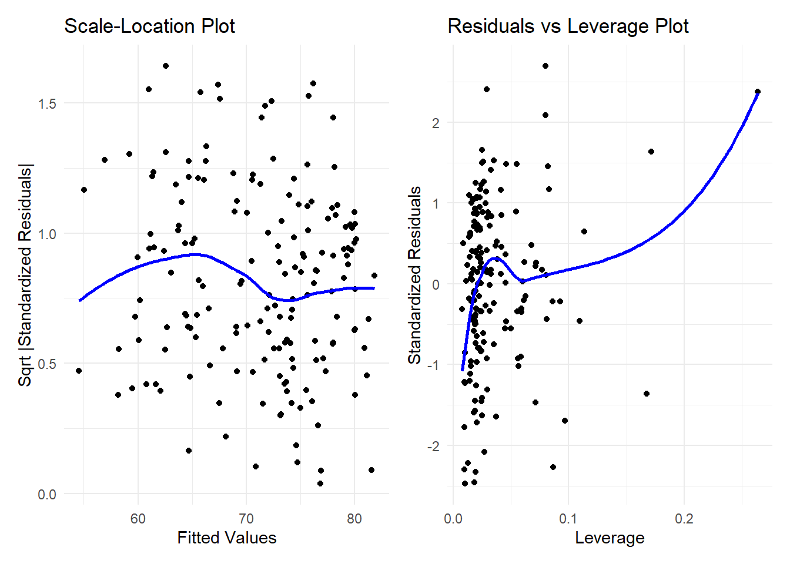

Predicting Life Expectancy
Introduction
Overview
- Objective: Predict life expectancy in 2021 using WHO data.
- Approach: Build a linear regression model with selected predictors.
Data Sources
- World Health Statistics: Explore global health statistics compiled by WHO, covering key health indicators and trends worldwide.
- Life Expectancy Data: Access detailed data on life expectancy at birth, including global and regional comparisons.
Data Description
- 2021 year data selected for largest number of variables with data.
- Collected globally for multiple years and countries.
- Variables include economic, health, and demographic indicators.
- Aggregated by year and country.
2021 Variable Selection
| Indicator Code | Indicator Name | Number of Countries |
|---|---|---|
| WHOSIS_000001 | Life expectancy at birth (years) | 185 |
| GHED_GGHE-DGGE_SHA2011 | Domestic general government health expenditure | 196 |
| VIOLENCE_HOMICIDERATE | Mortality rate due to homicide (per 100,000 pop) | 192 |
| SDGPOISON | Mortality rate from unintentional poisoning (per 100,000 pop) | 192 |
| SDGSUICIDE | Suicide mortality rate (per 100,000 pop) | 192 |
| RS_198 | Road traffic mortality rate (per 100,000 pop) | 202 |
| UHC_INDEX_REPORTED | UHC: Service coverage index | 201 |
Exploratory Data Analysis
Exploratory Data Analysis
histogram_plot <- ggplot(data = cleaned_wle_2021_df,
aes(x = WHOSIS_000001__SEX_BTSX)) +
geom_histogram(binwidth = 2, fill = "skyblue", color = "black", alpha = 0.7) +
theme_minimal() +
labs(
title = "Distribution of Life Expectancy - Histogram",
x = "Life Expectancy from Birth",
y = "Frequency"
)
boxplot_plot <- ggplot(data = cleaned_wle_2021_df,
aes(x = WHOSIS_000001__SEX_BTSX, y = 0)) +
geom_boxplot(width = 0.5, fill = "orange", alpha = 0.7) +
theme_minimal() +
theme(axis.text.y = element_blank(), axis.ticks.y = element_blank(),
axis.title.y = element_blank()) + # Remove y-axis elements for cleaner look
labs(
x = "Life Expectancy from Birth"
)
(histogram_plot / boxplot_plot) +
plot_layout(heights = c(3, 1))Warning: Removed 23 rows containing non-finite outside the scale range
(`stat_bin()`).Warning: Removed 23 rows containing non-finite outside the scale range
(`stat_boxplot()`).
table_df <- who_life_expectancy_2021_df %>%
filter(!is.na(WHOSIS_000001__SEX_BTSX)) %>%
transmute(Country = DIM_GEO_NAME,
`Life expectancy` = WHOSIS_000001__SEX_BTSX,
`Diff from mean` = round(WHOSIS_000001__SEX_BTSX - mean(WHOSIS_000001__SEX_BTSX), 2)) %>%
arrange(desc(`Life expectancy`))
stats_table <- table_df %>%
summarise(
`N` = n(),
`Mean` = round(mean(`Life expectancy`), 2),
`Median` = round(median(`Life expectancy`), 2),
`Minimum` = round(min(`Life expectancy`), 2),
`Maximum` = round(max(`Life expectancy`), 2),
`SD` = round(sd(`Life expectancy`), 2)
)
kable(stats_table,
format = "html") %>%
kable_styling(font_size = 30)| N | Mean | Median | Minimum | Maximum | SD |
|---|---|---|---|---|---|
| 185 | 71.29 | 72.19 | 51.48 | 84.46 | 7.14 |
Exploratory Data Analysis
# Generate the Top 5 and Bottom 5 tables
top_table <- kable(head(table_df, 5),
caption = "Top 5",
format = "html") %>%
kable_styling(font_size = 22)
bottom_table <- kable(tail(table_df, 5),
caption = "Bottom 5",
format = "html") %>%
kable_styling(font_size = 22)
kable(table_df %>% filter(Country == 'United States of America'),
format = "html") %>%
kable_styling(font_size = 30)| Country | Life expectancy | Diff from mean |
|---|---|---|
| United States of America | 76.37 | 5.08 |
# Combine tables in columns using HTML
htmltools::tagList(
htmltools::tags$div(
style = "display: flex; justify-content: space-between;",
htmltools::tags$div(style = "width: 48%;", HTML(top_table)),
htmltools::tags$div(style = "width: 48%;", HTML(bottom_table))
)
)| Country | Life expectancy | Diff from mean |
|---|---|---|
| Japan | 84.46 | 13.17 |
| Singapore | 83.86 | 12.57 |
| Republic of Korea | 83.80 | 12.51 |
| Switzerland | 83.33 | 12.04 |
| Australia | 83.10 | 11.81 |
| Country | Life expectancy | Diff from mean |
|---|---|---|
| Mozambique | 57.66 | -13.63 |
| Eswatini | 54.59 | -16.70 |
| Somalia | 53.95 | -17.34 |
| Central African Republic | 52.31 | -18.98 |
| Lesotho | 51.48 | -19.81 |
Exploratory Data Analysis
who_life_expectancy_2021_model_df <- who_life_expectancy_2021_df %>%
select(DIM_GEO_NAME, WHOSIS_000001__SEX_BTSX, SDGSUICIDE, SDGPOISON, VIOLENCE_HOMICIDERATE, `GHED_GGHE-DGGE_SHA2011`, UHC_INDEX_REPORTED, RS_198) %>% na.omit()
ggpairs(who_life_expectancy_2021_model_df %>% select(-DIM_GEO_NAME), title = "Pairs Plot with Correlations and Scatterplots")
1st Multiple Linear Regression Model
\[ \begin{aligned} \text{WHOSIS_000001_SEX_BTSX} &= \beta_0 + \beta_1 (\text{SDGSUICIDE}) + \beta_2 (\text{SDGPOISON}) + \beta_3 (\text{VIOLENCE_HOMICIDERATE}) \\ &\quad + \beta_4 (\text{GHED_GGHE-DGGE_SHA2011}) + \beta_5 (\text{UHC_INDEX_REPORTED}) + \beta_6 (\text{RS_198}) + \epsilon \end{aligned} \]
le_2021_lm <- lm(WHOSIS_000001__SEX_BTSX ~ SDGSUICIDE + SDGPOISON + VIOLENCE_HOMICIDERATE +
`GHED_GGHE-DGGE_SHA2011` + UHC_INDEX_REPORTED + RS_198, data = who_life_expectancy_2021_model_df)
mod <- summary(le_2021_lm)
coef_df <- mod$coefficients %>%
as.data.frame() %>%
rename(p = `Pr(>|t|)`) %>%
mutate(p = ifelse(p < 0.0001, "<0.0001", format(round(p, 4), scientific = FALSE)))
kable(coef_df) %>%
kable_styling(font_size = 24)| Estimate | Std. Error | t value | p | |
|---|---|---|---|---|
| (Intercept) | 56.3063380 | 1.5535484 | 36.243698 | <0.0001 |
| SDGSUICIDE | -0.1507814 | 0.0408496 | -3.691136 | 0.0003 |
| SDGPOISON | -1.6042932 | 0.3694605 | -4.342259 | <0.0001 |
| VIOLENCE_HOMICIDERATE | -0.0997750 | 0.0177839 | -5.610420 | <0.0001 |
| `GHED_GGHE-DGGE_SHA2011` | 0.0717588 | 0.0597367 | 1.201251 | 0.2313 |
| UHC_INDEX_REPORTED | 0.2948442 | 0.0226499 | 13.017443 | <0.0001 |
| RS_198 | -0.1361027 | 0.0406599 | -3.347347 | 0.0010 |
dof <- paste0(mod$df[2], ' (', mod$df[1] - 1, ')')
f_stat <- round(mod$fstatistic[[1]], 4)
kable(data.frame(dof = dof, adjusted_r_sq = mod$adj.r.squared, f = f_stat, p = '<0.0001')) %>%
kable_styling(font_size = 24)| dof | adjusted_r_sq | f | p |
|---|---|---|---|
| 168 (6) | 0.8382467 | 151.2854 | <0.0001 |
1st Multiple Linear Regression Model
plot1 <- ggplot(augment(le_2021_lm), aes(.fitted, .resid)) +
geom_point() +
geom_hline(yintercept = 0, linetype = "dashed") +
labs(title = "Residuals vs Fitted", x = "Fitted Values", y = "Residuals") +
theme_minimal()
# Normal Q-Q Plot
plot2 <- ggplot(augment(le_2021_lm), aes(sample = .std.resid)) +
stat_qq() +
stat_qq_line() +
labs(title = "Normal Q-Q Plot", x = "Theoretical Quantiles", y = "Standardized Residuals") +
theme_minimal()
# Combine plots side by side with patchwork
plot1 + plot2
1st Multiple Linear Regression Model
plot3 <- ggplot(augment(le_2021_lm), aes(x = .fitted, y = sqrt(abs(.std.resid)))) +
geom_point() +
geom_smooth(se = FALSE, method = "loess", color = "blue") +
labs(title = "Scale-Location Plot", x = "Fitted Values", y = "Sqrt |Standardized Residuals|") +
theme_minimal()
plot4 <- ggplot(augment(le_2021_lm), aes(x = .hat, y = .std.resid)) +
geom_point() +
geom_smooth(se = FALSE, method = "loess", color = "blue") +
labs(title = "Residuals vs Leverage Plot", x = "Leverage", y = "Standardized Residuals") +
theme_minimal()
plot3 + plot4`geom_smooth()` using formula = 'y ~ x'
`geom_smooth()` using formula = 'y ~ x'
1st Multiple Linear Regression Model
dw_test <- dwtest(le_2021_lm)
bp_test <- bptest(le_2021_lm)
ncv_test <- ncvTest(le_2021_lm)
shapiro_test <- shapiro.test(residuals(le_2021_lm))
ks_test <- ks.test(residuals(le_2021_lm), "pnorm", mean = mean(residuals(le_2021_lm)), sd = sd(residuals(le_2021_lm)))
# Combine results into a data frame
test_results <- data.frame(
Test = c("Durbin-Watson Test", "Breusch-Pagan Test", "Non-Constant Variance Test",
"Shapiro-Wilk Test", "Kolmogorov-Smirnov Test"),
Statistic = c(dw_test$statistic, bp_test$statistic, ncv_test$ChiSquare,
shapiro_test$statistic, ks_test$statistic),
P_Value = c(dw_test$p.value, bp_test$p.value, ncv_test$p,
shapiro_test$p.value, ks_test$p.value)
)
# Generate kable table
kable(test_results, row.names = FALSE, caption = "Results of Diagnostic Tests for Linear Regression")| Test | Statistic | P_Value |
|---|---|---|
| Durbin-Watson Test | 2.3498186 | 0.9893840 |
| Breusch-Pagan Test | 7.1365819 | 0.3084008 |
| Non-Constant Variance Test | 3.4501468 | 0.0632462 |
| Shapiro-Wilk Test | 0.9882313 | 0.1534889 |
| Kolmogorov-Smirnov Test | 0.0536419 | 0.6951746 |
1st Multiple Linear Regression Model
VIF
vif_values <- vif(le_2021_lm)
# Display VIF values
print(vif_values) SDGSUICIDE SDGPOISON VIOLENCE_HOMICIDERATE
1.331199 1.594088 1.141473
`GHED_GGHE-DGGE_SHA2011` UHC_INDEX_REPORTED RS_198
2.136879 2.877204 1.942718 1st Multiple Linear Regression Model
Outliers
cooks_d <- cooks.distance(le_2021_lm)
influential <- which(cooks_d > (4/nrow(who_life_expectancy_2021_model_df)))
cat("Influential Observations:\n", influential)Influential Observations:
20 50 54 55 69 71 82 92 112 130 148who_life_expectancy_2021_model_df[influential, ]$DIM_GEO_NAME [1] "Bolivia (Plurinational State of)" "El Salvador"
[3] "Eswatini" "Ethiopia"
[5] "Guyana" "Honduras"
[7] "Japan" "Lesotho"
[9] "Nepal" "Republic of Korea"
[11] "South Africa" 2nd Multiple Linear Regression Model
\[ \begin{aligned} \text{WHOSIS_000001_SEX_BTSX} &= \beta_0 + \beta_1 (\text{SDGSUICIDE}) + \beta_2 (\text{SDGPOISON}) + \beta_3 (\text{VIOLENCE_HOMICIDERATE}) \\ &\quad + \beta_4 (\text{UHC_INDEX_REPORTED}) + \beta_5 (\text{RS_198}) + \epsilon \end{aligned} \]
who_life_expectancy_2021_model_2_df <- who_life_expectancy_2021_df %>%
select(DIM_GEO_NAME, WHOSIS_000001__SEX_BTSX, SDGSUICIDE, SDGPOISON, VIOLENCE_HOMICIDERATE, UHC_INDEX_REPORTED, RS_198) %>%
na.omit()
le_2021_lm_2 <- lm(WHOSIS_000001__SEX_BTSX ~ SDGSUICIDE + SDGPOISON + VIOLENCE_HOMICIDERATE + UHC_INDEX_REPORTED + RS_198, data = who_life_expectancy_2021_model_2_df)
mod <- summary(le_2021_lm_2)
coef_df <- mod$coefficients %>%
as.data.frame() %>%
rename(p = `Pr(>|t|)`) %>%
mutate(p = ifelse(p < 0.0001, "<0.0001", format(round(p, 4), scientific = FALSE)))
kable(coef_df) %>%
kable_styling(font_size = 24)| Estimate | Std. Error | t value | p | |
|---|---|---|---|---|
| (Intercept) | 55.5344011 | 1.4987284 | 37.054346 | <0.0001 |
| SDGSUICIDE | -0.1504010 | 0.0405660 | -3.707558 | 0.0003 |
| SDGPOISON | -1.6593428 | 0.3605409 | -4.602371 | <0.0001 |
| VIOLENCE_HOMICIDERATE | -0.1017178 | 0.0174390 | -5.832793 | <0.0001 |
| UHC_INDEX_REPORTED | 0.3156003 | 0.0179705 | 17.562144 | <0.0001 |
| RS_198 | -0.1123031 | 0.0376799 | -2.980452 | 0.0033 |
dof <- paste0(mod$df[2], ' (', mod$df[1] - 1, ')')
f_stat <- round(mod$fstatistic[[1]], 4)
kable(data.frame(dof = dof, adjusted_r_sq = mod$adj.r.squared, f = f_stat, p = '<0.0001')) %>%
kable_styling(font_size = 24)| dof | adjusted_r_sq | f | p |
|---|---|---|---|
| 173 (5) | 0.8399323 | 187.8059 | <0.0001 |
2nd Multiple Linear Regression Model
plot1 <- ggplot(augment(le_2021_lm_2), aes(.fitted, .resid)) +
geom_point() +
geom_hline(yintercept = 0, linetype = "dashed") +
labs(title = "Residuals vs Fitted", x = "Fitted Values", y = "Residuals") +
theme_minimal()
# Normal Q-Q Plot
plot2 <- ggplot(augment(le_2021_lm_2), aes(sample = .std.resid)) +
stat_qq() +
stat_qq_line() +
labs(title = "Normal Q-Q Plot", x = "Theoretical Quantiles", y = "Standardized Residuals") +
theme_minimal()
# Combine plots side by side with patchwork
plot1 + plot2
2nd Multiple Linear Regression Model
plot3 <- ggplot(augment(le_2021_lm_2), aes(x = .fitted, y = sqrt(abs(.std.resid)))) +
geom_point() +
geom_smooth(se = FALSE, method = "loess", color = "blue") +
labs(title = "Scale-Location Plot", x = "Fitted Values", y = "Sqrt |Standardized Residuals|") +
theme_minimal()
plot4 <- ggplot(augment(le_2021_lm_2), aes(x = .hat, y = .std.resid)) +
geom_point() +
geom_smooth(se = FALSE, method = "loess", color = "blue") +
labs(title = "Residuals vs Leverage Plot", x = "Leverage", y = "Standardized Residuals") +
theme_minimal()
plot3 + plot4`geom_smooth()` using formula = 'y ~ x'
`geom_smooth()` using formula = 'y ~ x'
2nd Multiple Linear Regression Model
dw_test_2 <- dwtest(le_2021_lm_2)
bp_test_2 <- bptest(le_2021_lm_2)
ncv_test_2 <- ncvTest(le_2021_lm_2)
shapiro_test_2 <- shapiro.test(residuals(le_2021_lm_2))
ks_test_2 <- ks.test(residuals(le_2021_lm_2), "pnorm", mean = mean(residuals(le_2021_lm_2)), sd = sd(residuals(le_2021_lm_2)))
# Combine results into a data frame
test_results_2 <- data.frame(
Test = c("Durbin-Watson Test", "Breusch-Pagan Test", "Non-Constant Variance Test",
"Shapiro-Wilk Test", "Kolmogorov-Smirnov Test"),
Statistic = c(dw_test_2$statistic, bp_test_2$statistic, ncv_test_2$ChiSquare,
shapiro_test_2$statistic, ks_test_2$statistic),
P_Value = c(dw_test_2$p.value, bp_test_2$p.value, ncv_test_2$p,
shapiro_test_2$p.value, ks_test_2$p.value)
)
# Generate kable table
kable(test_results_2, row.names = FALSE, caption = "Results of Diagnostic Tests for Linear Regression")| Test | Statistic | P_Value |
|---|---|---|
| Durbin-Watson Test | 2.3230996 | 0.9847699 |
| Breusch-Pagan Test | 6.8131376 | 0.2349126 |
| Non-Constant Variance Test | 2.3655306 | 0.1240417 |
| Shapiro-Wilk Test | 0.9890196 | 0.1817105 |
| Kolmogorov-Smirnov Test | 0.0573625 | 0.5978729 |
2nd Multiple Linear Regression Model
VIF
vif_values <- vif(le_2021_lm_2)
# Display VIF values
print(vif_values) SDGSUICIDE SDGPOISON VIOLENCE_HOMICIDERATE
1.327656 1.617461 1.096931
UHC_INDEX_REPORTED RS_198
1.884449 1.837350 2nd Multiple Linear Regression Model
Outliers
cooks_d <- cooks.distance(le_2021_lm_2)
influential <- which(cooks_d > (4/nrow(who_life_expectancy_2021_model_2_df)))
cat("Influential Observations:\n", influential)Influential Observations:
50 54 55 69 71 92 107 113 131 150who_life_expectancy_2021_model_2_df[influential, ]$DIM_GEO_NAME [1] "El Salvador" "Eswatini" "Ethiopia"
[4] "Guyana" "Honduras" "Lesotho"
[7] "Mongolia" "Nepal" "Republic of Korea"
[10] "South Africa" Cross-validated 2nd Multiple Linear Regression Model
\[ \begin{aligned} \text{WHOSIS_000001_SEX_BTSX} &= \beta_0 + \beta_1 (\text{SDGSUICIDE}) + \beta_2 (\text{SDGPOISON}) + \beta_3 (\text{VIOLENCE_HOMICIDERATE}) \\ &\quad + \beta_4 (\text{UHC_INDEX_REPORTED}) + \beta_5 (\text{RS_198}) + \epsilon \end{aligned} \] Cross validation with 10 folds and outliers removed if Cooks D is over 4/n = 0.02424242.
who_life_expectancy_2021_model_2_cv_df <- who_life_expectancy_2021_df[-influential, ] %>%
select(DIM_GEO_NAME, WHOSIS_000001__SEX_BTSX, SDGSUICIDE, SDGPOISON, VIOLENCE_HOMICIDERATE, UHC_INDEX_REPORTED, RS_198) %>%
na.omit()
set.seed(123)
train_control <- trainControl(method = "cv", number = 10)
le_2021_lm_2_cv <- train(
WHOSIS_000001__SEX_BTSX ~ SDGSUICIDE + SDGPOISON + VIOLENCE_HOMICIDERATE + UHC_INDEX_REPORTED + RS_198,
data = who_life_expectancy_2021_model_2_cv_df,
method = "lm",
trControl = train_control
)
mod <- summary(le_2021_lm_2_cv)
coef_df <- mod$coefficients %>%
as.data.frame() %>%
rename(p = `Pr(>|t|)`) %>%
mutate(p = ifelse(p < 0.0001, "<0.0001", format(round(p, 4), scientific = FALSE)))
kable(coef_df) %>%
kable_styling(font_size = 24)| Estimate | Std. Error | t value | p | |
|---|---|---|---|---|
| (Intercept) | 55.3603598 | 1.5484979 | 35.751007 | <0.0001 |
| SDGSUICIDE | -0.1572935 | 0.0415137 | -3.788950 | 0.0002 |
| SDGPOISON | -1.6994817 | 0.3980872 | -4.269120 | <0.0001 |
| VIOLENCE_HOMICIDERATE | -0.1002785 | 0.0175822 | -5.703413 | <0.0001 |
| UHC_INDEX_REPORTED | 0.3169513 | 0.0186606 | 16.985073 | <0.0001 |
| RS_198 | -0.1060533 | 0.0390329 | -2.717026 | 0.0073 |
dof <- paste0(mod$df[2], ' (', mod$df[1] - 1, ')')
f_stat <- round(mod$fstatistic[[1]], 4)
kable(data.frame(dof = dof, adjusted_r_sq = mod$adj.r.squared, f = f_stat, p = '<0.0001')) %>%
kable_styling(font_size = 24)| dof | adjusted_r_sq | f | p |
|---|---|---|---|
| 165 (5) | 0.8381847 | 177.1161 | <0.0001 |
Cross-validated 2nd Multiple Linear Regression Model
plot1 <- ggplot(augment(le_2021_lm_2_cv$finalModel), aes(.fitted, .resid)) +
geom_point() +
geom_hline(yintercept = 0, linetype = "dashed") +
labs(title = "Residuals vs Fitted", x = "Fitted Values", y = "Residuals") +
theme_minimal()
plot2 <- ggplot(augment(le_2021_lm_2_cv$finalModel), aes(sample = .std.resid)) +
stat_qq() +
stat_qq_line() +
labs(title = "Normal Q-Q Plot", x = "Theoretical Quantiles", y = "Standardized Residuals") +
theme_minimal()
plot1 + plot2
Cross-validated 2nd Multiple Linear Regression Model
plot3 <- ggplot(augment(le_2021_lm_2_cv$finalModel), aes(x = .fitted, y = sqrt(abs(.std.resid)))) +
geom_point() +
geom_smooth(se = FALSE, method = "loess", color = "blue") +
labs(title = "Scale-Location Plot", x = "Fitted Values", y = "Sqrt |Standardized Residuals|") +
theme_minimal()
plot4 <- ggplot(augment(le_2021_lm_2_cv$finalModel), aes(x = .hat, y = .std.resid)) +
geom_point() +
geom_smooth(se = FALSE, method = "loess", color = "blue") +
labs(title = "Residuals vs Leverage Plot", x = "Leverage", y = "Standardized Residuals") +
theme_minimal()
plot3 + plot4`geom_smooth()` using formula = 'y ~ x'
`geom_smooth()` using formula = 'y ~ x'
Cross-validated 2nd Multiple Linear Regression Model
dw_test_cv <- dwtest(le_2021_lm_2_cv$finalModel)
bp_test_cv <- bptest(le_2021_lm_2_cv$finalModel)
ncv_test_cv <- ncvTest(le_2021_lm_2_cv$finalModel)
shapiro_test_cv <- shapiro.test(residuals(le_2021_lm_2_cv$finalModel))
ks_test_cv <- ks.test(residuals(le_2021_lm_2_cv$finalModel), "pnorm", mean = mean(residuals(le_2021_lm_2_cv$finalModel)), sd = sd(residuals(le_2021_lm_2_cv$finalModel)))
test_results_cv <- data.frame(
Test = c("Durbin-Watson Test", "Breusch-Pagan Test", "Non-Constant Variance Test",
"Shapiro-Wilk Test", "Kolmogorov-Smirnov Test"),
Statistic = c(dw_test_cv$statistic, bp_test_cv$statistic, ncv_test_cv$ChiSquare,
shapiro_test_cv$statistic, ks_test_cv$statistic),
P_Value = c(dw_test_cv$p.value, bp_test_cv$p.value, ncv_test_cv$p,
shapiro_test_cv$p.value, ks_test_cv$p.value)
)
kable(test_results_cv, row.names = FALSE, caption = "Results of Diagnostic Tests for Linear Regression")| Test | Statistic | P_Value |
|---|---|---|
| Durbin-Watson Test | 2.3769557 | 0.9932708 |
| Breusch-Pagan Test | 6.0301515 | 0.3032961 |
| Non-Constant Variance Test | 2.8903527 | 0.0891114 |
| Shapiro-Wilk Test | 0.9894765 | 0.2359149 |
| Kolmogorov-Smirnov Test | 0.0502646 | 0.7806274 |
Cross-validated 2nd Multiple Linear Regression Model
VIF
vif_values <- vif(le_2021_lm_2_cv$finalModel)
print(vif_values) SDGSUICIDE SDGPOISON VIOLENCE_HOMICIDERATE
1.347350 1.721961 1.099314
UHC_INDEX_REPORTED RS_198
1.902331 1.845280 Model Performance
calculate_lm_metrics <- function(model) {
residuals <- model$residuals
rmse <- sqrt(mean(residuals^2))
mae <- mean(abs(residuals))
r_squared <- summary(model)$r.squared
adj_r_squared <- summary(model)$adj.r.squared
aic <- AIC(model)
bic <- BIC(model)
list(
RMSE = rmse,
MAE = mae,
R2 = r_squared,
Adjusted_R2 = adj_r_squared,
AIC = aic,
BIC = bic
)
}
cv_metrics <- calculate_lm_metrics(le_2021_lm_2_cv$finalModel)
lm_2_metrics <- calculate_lm_metrics(le_2021_lm_2)
lm_metrics <- calculate_lm_metrics(le_2021_lm)
comparison_df <- data.frame(
Model = c("le_2021_lm", "le_2021_lm_2", "le_2021_lm_2_cv"),
RMSE = c(lm_metrics$RMSE, lm_2_metrics$RMSE, cv_metrics$RMSE),
MAE = c(lm_metrics$MAE, lm_2_metrics$MAE, cv_metrics$MAE),
R2 = c(lm_metrics$R2, lm_2_metrics$R2, cv_metrics$R2),
Adjusted_R2 = c(lm_metrics$Adjusted_R2, lm_2_metrics$Adjusted_R2, cv_metrics$Adjusted_R2),
AIC = c(lm_metrics$AIC, lm_2_metrics$AIC, cv_metrics$AIC),
BIC = c(lm_metrics$BIC, lm_2_metrics$BIC, cv_metrics$BIC)
)
kable(comparison_df, caption = "Comparison of Model Performance Metrics") %>%
kable_styling(font_size = 26, full_width = FALSE)| Model | RMSE | MAE | R2 | Adjusted_R2 | AIC | BIC |
|---|---|---|---|---|---|---|
| le_2021_lm | 2.805954 | 2.212388 | 0.8438244 | 0.8382467 | 873.7387 | 899.0570 |
| le_2021_lm_2 | 2.820613 | 2.234396 | 0.8444286 | 0.8399323 | 893.2097 | 915.5214 |
| le_2021_lm_2_cv | 2.828850 | 2.243908 | 0.8429440 | 0.8381847 | 854.9127 | 876.9043 |
References
Datasets
World Health Organization. (n.d.). World Health Statistics. Retrieved from https://www.who.int/data/gho/data/themes/world-health-statistics.
Description: Explore global health statistics compiled by WHO, covering key health indicators and trends worldwide.World Health Organization. (n.d.). Life Expectancy at Birth (Years). Retrieved from https://www.who.int/data/gho/data/indicators/indicator-details/GHO/life-expectancy-at-birth-(years).
Description: Access detailed data on life expectancy at birth, including global and regional comparisons.
References
Software and Packages
Wickham, H., Averick, M., Bryan, J., Chang, W., McGowan, L., François, R., … & Yutani, H. (2019). Welcome to the tidyverse. Journal of Open Source Software, 4(43), 1686.
Description: A collection of R packages for data science, includingggplot2,dplyr, andtidyr.Xie, Y. (2015). Dynamic Documents with R and knitr. 2nd edition. CRC Press.
Description: A package for dynamic report generation in R, enabling reproducible research.Becker, R. A., Wilks, A. R., & Brownrigg, R. (2018). maps: Draw Geographical Maps. R package version 3.3.0.
Description: Provides data and functions to create geographical maps.Zhu, H. (2021). kableExtra: Construct Complex Table with kable and Pipe Syntax. R package version 1.3.4. Retrieved from https://CRAN.R-project.org/package=kableExtra.
Description: Enhancesknitr::kable()for richly formatted tables.Allaire, J. (2018). htmltools: Tools for HTML. R package version 0.5.2. Retrieved from https://CRAN.R-project.org/package=htmltools.
Description: Tools for creating and rendering HTML in R Markdown and Quarto.Pedersen, T. L. (2020). patchwork: The Composer of ggplot2 Plots. R package version 1.1.1. Retrieved from https://CRAN.R-project.org/package=patchwork.
Description: Simplifies combining multiple ggplot2 plots into cohesive layouts.Auguie, B. (2017). gridExtra: Miscellaneous Functions for “Grid” Graphics. R package version 2.3. Retrieved from https://CRAN.R-project.org/package=gridExtra.
Description: Provides functions for arranging multiple grid-based plots.Robinson, D., Hayes, A., & Couch, S. (2022). broom: Convert Statistical Analysis Objects into Tidy Tibbles. R package version 0.7.12. Retrieved from https://CRAN.R-project.org/package=broom.
Description: Converts statistical analysis objects into tidy data frames.Fox, J., & Weisberg, S. (2018). An R Companion to Applied Regression. 3rd edition. Sage Publications.
Description: Provides diagnostic tools for linear and generalized linear models.Zeileis, A., & Hothorn, T. (2002). Diagnostic Checking in Regression Relationships. R News, 2(3), 7–10.
Description: Implements diagnostic tests for linear regression, including the Breusch-Pagan test.